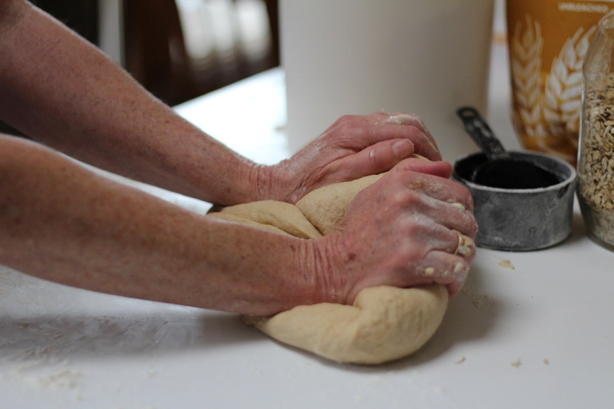
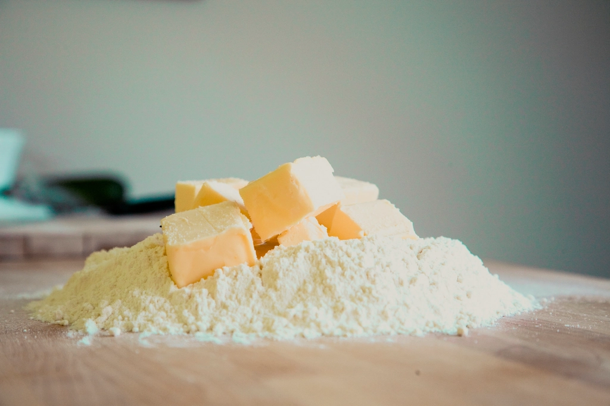

一本堂大分日田店は、もちもち・ふんわりとした食感の生食パンを専門に手がける「一本堂」の一軒として、大分県日田市南元町に店を構えています。
日田はかつて江戸幕府の直轄地「天領」として栄え、今も豆田町の白壁や蔵が往時の面影を残す、水と歴史の町です。そんな町の一角で、やわらかくもちもちとした生食パンを、日々の暮らしの延長として楽しんでいただけるように焼いています。
創業の経緯や店主についての詳しいご紹介は、確認が取れた内容から順にお伝えしていきます。まずはお近くにお越しの際、お気軽にお立ち寄りください。
耳までやわらかく、もちもちとした食感が楽しめるのが一本堂の生食パンの特長です。
朝食やおやつなど、日々の暮らしのいろいろな場面で楽しんでいただけるパンづくりを心がけています。価格帯の詳細は店頭にてご確認ください。
大分県日田市南元町という、地域の方が立ち寄りやすい立地に店を構えています。

使用する素材の詳しいご案内は、確認が取れたものから順にお伝えしていきます。